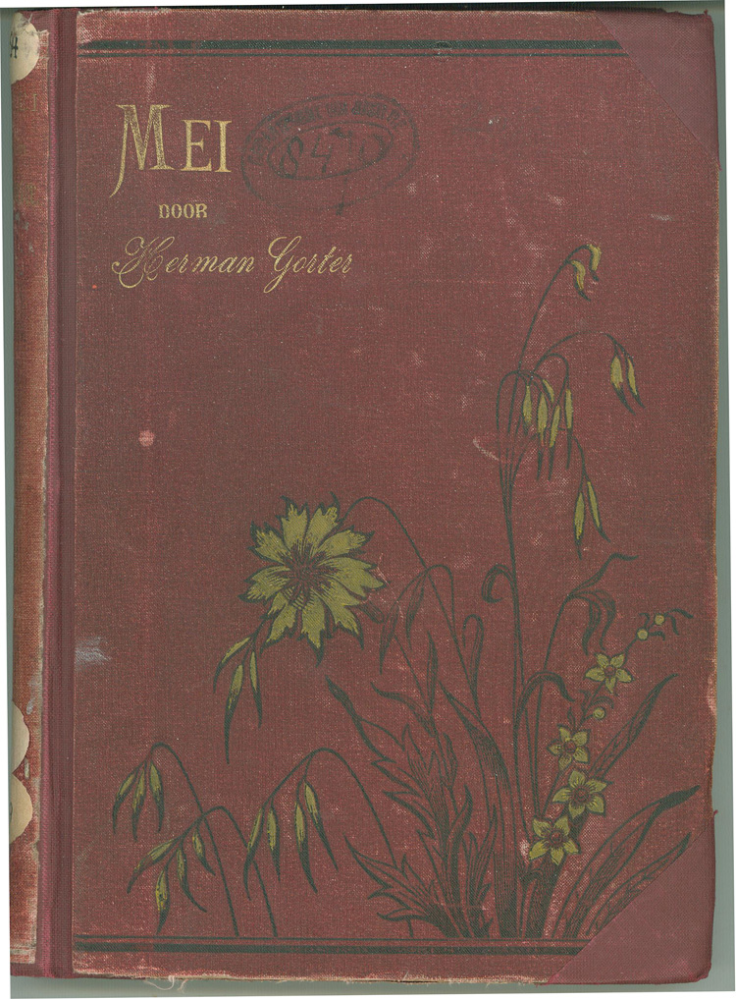

LevensloopHerman Gorter was een Nederlandse dichter. Herman werdt geboren op 26 november 1864 en stierf op zijn 62ste op 15 september 1927 Herman is vooral bekend geworden door zijn gedicht genaamd "Mei" (1889) |
|
Herman's bibliografie
|
|
StandbeeldenIn 1982 werd in Balk een beeldje van Gorter geplaatst, En in 1990 een standbeeld aan de Zeeweg in Bergen aan Zee, |
|
|  |
MeiMei is de naam van Herman's populairste gedicht, Je kan dit gedicht hier lezen: Lees het gedicht |